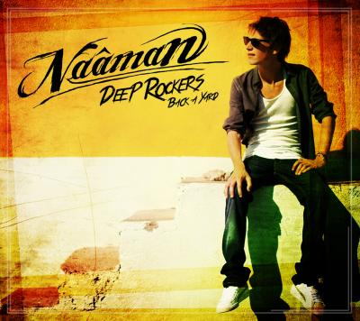
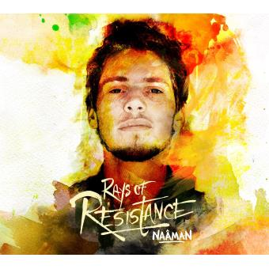
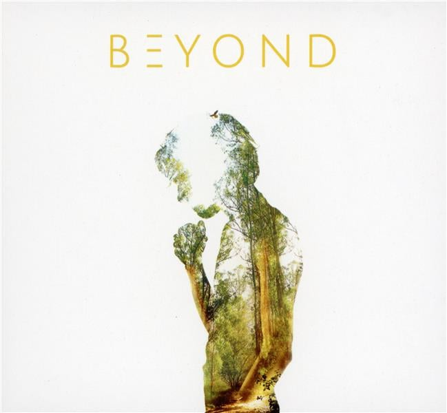
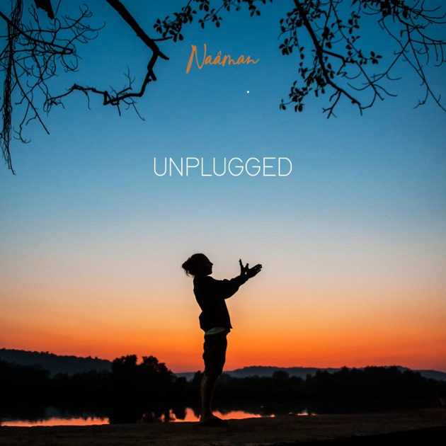

Aller au contenu
REALISATIONS
ALBUMS

- 📅 Sorti en
- ➤ Son premier album, avec des influences roots, reggae et hip-hop.
- ✨ Morceaux connus : House of Love, Rebel for Life, Big and Bad

- 📅 Sorti en
- ➤ Plus engagé et varié musicalement, avec des messages de paix et de révolte.
- ✨ Morceaux connus : Outta Road, Own Yourself, Freedom

- 📅 Sorti en
- ➤ Un album plus spirituel et personnel, toujours dans un style reggae/world.
- ✨ Morceaux connus : Simone, HealDafrica, My Days
- 📅 Sorti en
- ➤ Un mélange de reggae, dancehall et influences urbaines.
- ✨ Morceaux connus : Good Vibes, Stand Up, Never Give Up
- 📅 Sorti en
- ➤ Inspiré de ses voyages en Inde, un album entre reggae, spiritualité et exploration sonore.
- ✨ Morceaux connus : Karma, Temple Road, Get Up!
- 📅
- ➤ Projet qui l’a fait connaître dans la scène reggae française.

- 📅 Non daté précisément, vers
- ➤ Versions acoustiques de certains titres phares.
⬆